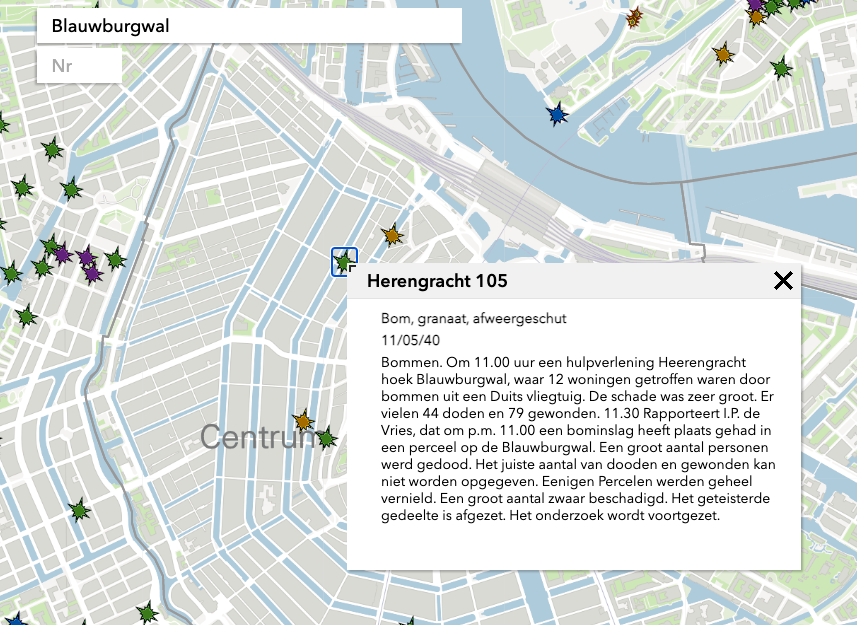

Dataweek
Project beschrijving
Met het themasemester van Information Design hadden we in December 2020 een mini projectje van een week lang waar we een datavisualisatie over een plek in Nederland moesten maken waar een (interessant) verschijnsel te zien is. De visualisatie moest een nieuw inzicht geven over de plek dat nog niet eerder in kaart is gebracht. Dit project heb ik samen met Jonah Meijers gemaakt.
Deliverables
- 1 open dataset
- 1 zelfverzamelede dataset
- Procesboek
Proces
Onderzoek
Onderzocht welke bominslag het interessantste was om een verhaal over te vertellen. Uiteindelijk de Blauwburgwal ontdekt, een heftige inslag met veel verhalen.
Na wat onderzoek van Jonah en mij online hebben we een website gevonden waar 6 maanden geleden een herdenking was voor deze bominslag. Hier vonden wij een auteur (Fred Geukes Foppen) die de verhalen van slachtoffers en ooggetuigen samen heeft gebracht in een boekje. Dit boekje hebben wij gekocht en zijn wij de verhalen verder gaan lezen om op een verder idee te komen. We zijn na de verhalen te hebben gelezen met z'n tweeën naar de Blauwburgwal gegaan om de plek te bekijken. We hebben daar onze eigen foto's gemaakt van hoe de plek er tegenwoordig uit ziet. Jonah kwam met het idee om een slider te maken die eerst de oude foto van de Blauwburgwal laat zien en na het sliden de foto van het heden.
Mijn bijdrage aan het project
Voor de visuele elementen heb ik een antique lijst gekreerd waarin we de foto's weergeven. Ook heb ik twee versies van map indicatoren gemaakt waar je op kan klikken voor de verhalen.
Eindoplevering
Uiteindelijk hebben we in een week dit ingeleverd. Als we meer tijd hadden gehad had het ons leuk geleken om ook nog een kaart van verschillende bombardementen in Amsterdam te weergeven en dan uiteindelijk op die van de Blauwburgwal in te zoomen. Ons eindcijfer was een 8,5.